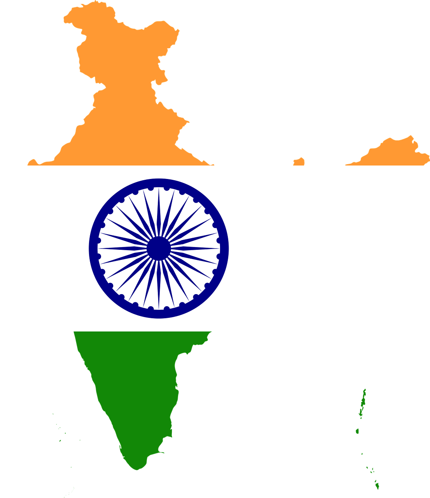
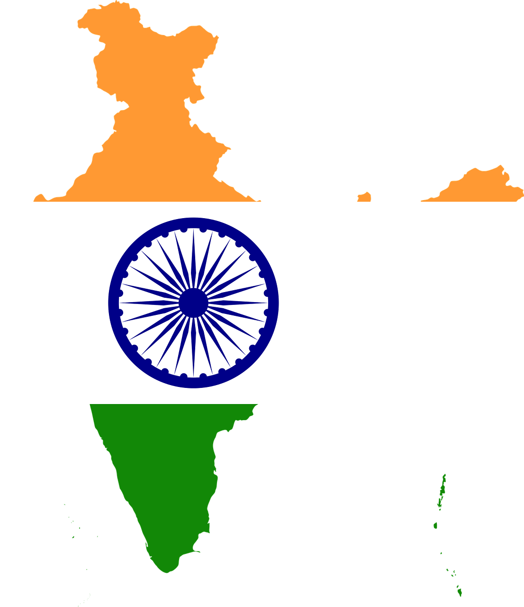

IPL 2020
Virat Kohli
Virat Kohli born 5 November 1988) is an Indian cricketer and the current captain of the India national team. A right-handed top-order batsman, Kohli is regarded as one of the best contemporary batsmen in the world.[3] He plays for Royal Challengers Bangalore in the Indian Premier League (IPL), and has been the team's captain since 2013. Kohli is consistently rated as one of the top-ranked batsmen in the world, according to the ICC Player Rankings. Among Indian batsmen, Kohli has his best ever Test rating (937 points), ODI rating (911 points) and T20I rating (897 points).
Test
7314 Runs
200s
7 times
100s
27 times
Highest
254* Runs